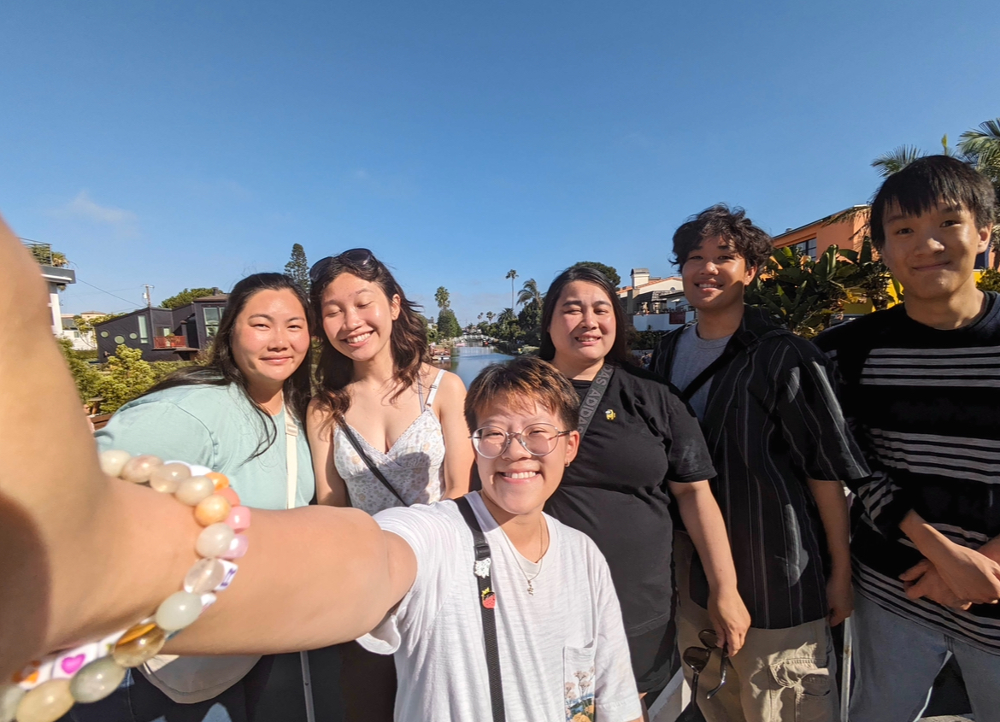

✶ ⋆｡˚MY PORTFOLIO PAGE!˚｡⋆ ✶
☺ Project 1.1.9: Design Your Own House ☺

Our first project was for the user to customize and design their own house. The customizations include name of the house, color of the house, choose between having a concrete front yard or grass yard, color and shape of the roof, shape of the window, and adding a pool. We set conditional statements to allow the customizations to work. Using iteration, a turtle swims in the users pool in the end of running the program.
Using App Inventor to make app game Duck Hunter.

Interactive Fiction Rags to Riches.

Modified bits in pictures.

Use data files to create graphs.

Using netlogo do remix of illusions.